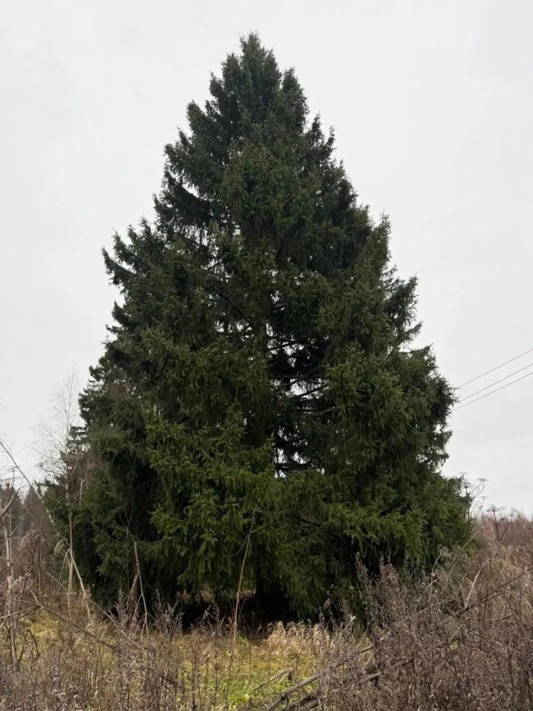

Москвач • Новости Москвы
@moscowach
Главная новогодняя ель России прибудет в Кремль вечером 9 декабря.

🎄Главная новогодняя ель России прибудет в Кремль вечером 9 декабря.
Для автопоезда традиционно откроют ворота у Спасской башни.
Для автопоезда традиционно откроют ворота у Спасской башни.